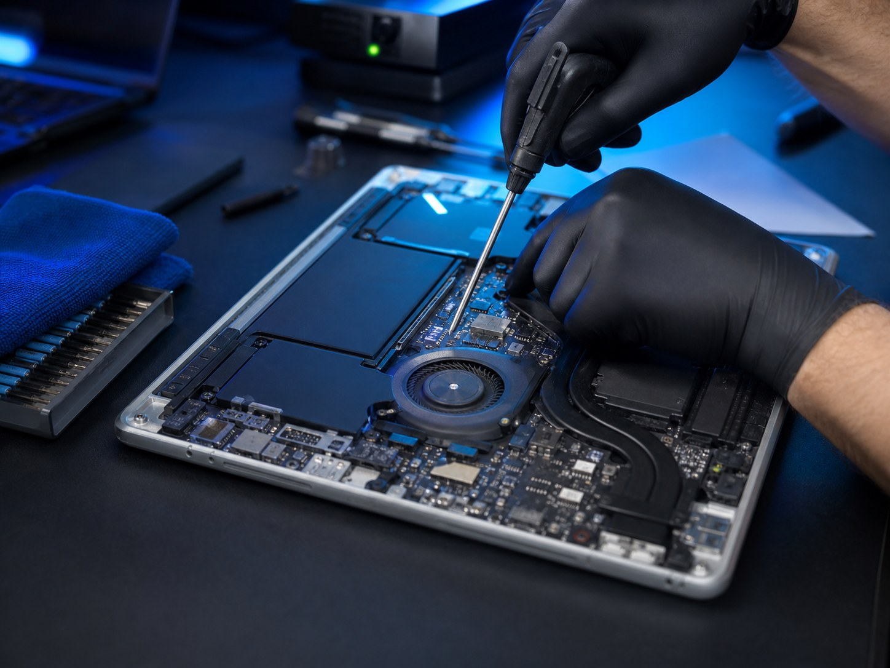
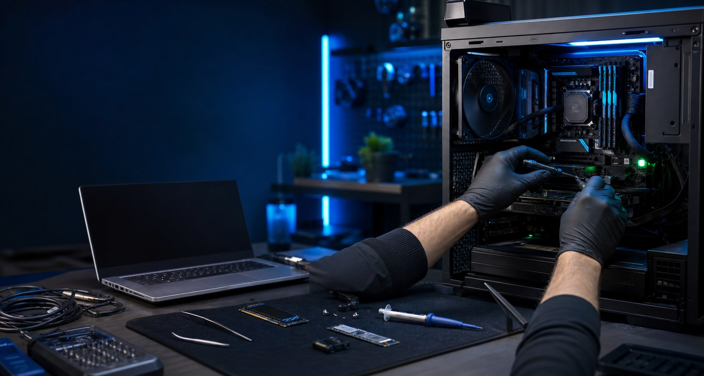
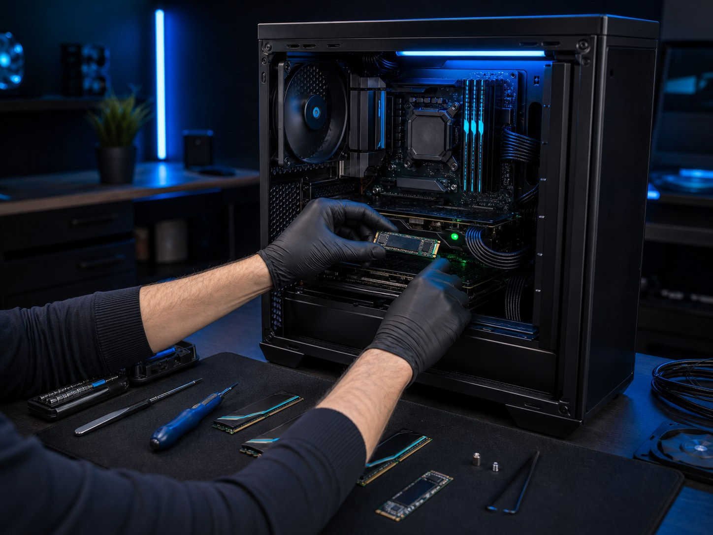
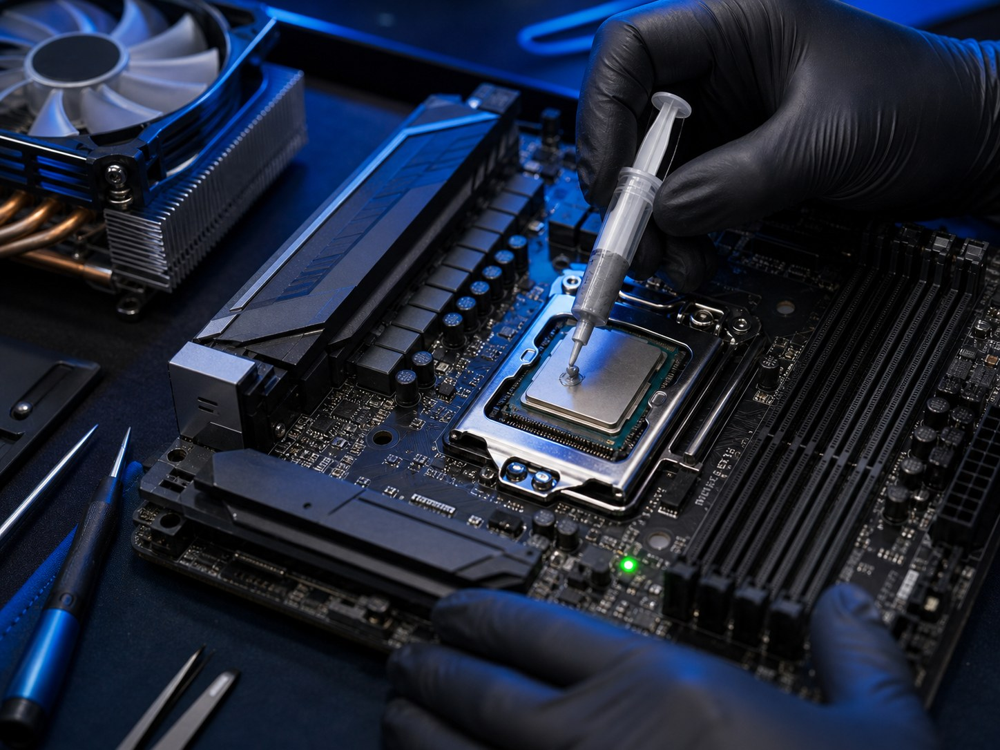

Mantención full de PC y notebook
Limpieza interna, revisión térmica, ventilación, estado general y recomendaciones preventivas.
Desde $25.000Soporte técnico disponible
Conectamos soluciones, reparamos confianza
Soporte TI, reparación de computadores y soluciones tecnológicas para hogares y pymes.
Mantención, reparación, optimización y mejoras de hardware para que tu equipo funcione rápido, limpio y confiable, con diagnóstico transparente y atención personalizada.
Servicios
Servicios pensados para computadores de hogar, notebooks de trabajo, estaciones de pyme y PC gamer.
Limpieza interna, revisión térmica, ventilación, estado general y recomendaciones preventivas.
Desde $25.000Instalación limpia, drivers esenciales, configuración inicial, seguridad básica y optimización.
Desde $20.000Mejora de temperaturas en CPU/GPU para reducir ruido, apagones y pérdida de rendimiento.
Desde $15.000Asesoría, instalación y migración para aumentar velocidad de arranque y respuesta general.
Desde $15.000 + repuestoRetiro de polvo, cuidado de ventiladores, gabinete, teclado y superficies con método seguro.
Desde $18.000Montaje ordenado, gestión de cables, flujo de aire, configuración inicial y pruebas de estabilidad.
Cotización según equipoLimpieza de amenazas, revisión de inicio, configuración del sistema y mejoras para uso diario.
Desde $20.000Trabajos realizados
Imágenes de referencia para mostrar el tipo de trabajo técnico que realiza FPP RedFix.




Experiencia y confianza
Más de 10 años resolviendo problemas de hardware, software, redes y continuidad operativa.
Por qué elegir FPP RedFix
El objetivo no es solo reparar, sino que entiendas qué ocurrió y cómo evitar que vuelva a pasar.
Te contamos qué falla, qué conviene hacer y qué opciones tienes antes de avanzar.
Priorizamos temperaturas, estabilidad, velocidad y seguridad para que notes el cambio.
Uso de herramientas adecuadas, pruebas posteriores y recomendaciones de cuidado.
Comunicación directa por WhatsApp, correo y redes para coordinar cada servicio.
Contacto
Atención en Peñaflor, Talagante, Padre Hurtado, Maipú y alrededores.
Preguntas frecuentes
Respuestas rápidas para coordinar mejor tu diagnóstico o reparación.
Sí. Primero se revisa el equipo y se explica el problema, las opciones de solución y el costo estimado.
Sí. Puedes enviar modelo del equipo, síntomas, fotos o videos para orientar mejor la cotización inicial.
Sí. También podemos ayudarte a elegir componentes compatibles según tu equipo y el uso que necesitas.
Sí. La modalidad depende del tipo de problema, urgencia y ubicación dentro de la zona de atención.
Sí. Se realizan pruebas, revisión de inicio, temperatura y funcionamiento general según el servicio contratado.